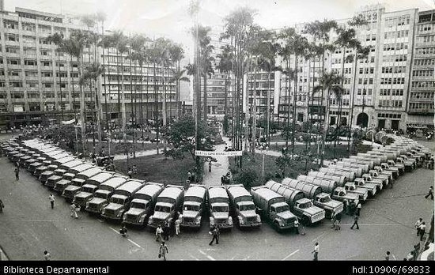

Fundada en 1536 por Sebastián de Belalcazar, se considera una ciudad que resalta por su gente amable y cálida, tiene un clima soleado y está rodeada de árboles, cuenta con una arquitectura urbana. La creación del departamento del Valle del Cauca fue un cambio administrativo y territorial que redefinió la vida social y económica del sur occidente colombiano. La designación de Cali como su capital estuvo acompañada de una serie de sucesos y obras que daban cuenta de un cambio de mentalidad en los grupos sociales que conformaban la ciudad. Algunos de estos cambios tuvieron que ver con la creación de la primera Cámara de Comercio, la fundación de la Arquidiócesis de Cali, la creación del Tranvía Municipal que comunicaba el centro de la ciudad con el puerto fluvial de Juanchito, la creación de la Compañía de electricidad y la creación de la compañía telefónica, entre otras obras que jugaron un papel importante en el desarrollo económico, social y cultural del nuevo departamento
